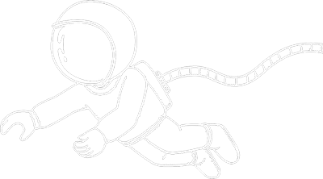
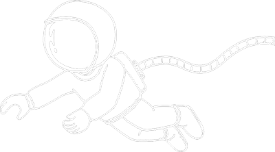

반갑습니다 :)
,
김소연입니다.
 

" 좋아하는 것은 디자인, 사진 그리고 여행
취미는 코딩입니다 ♥ "
" 좋아하는 것은 디자인,
사진 그리고 여행
취미는 코딩입니다 ♥ "
-
About Me
- Name
- 김소연
- Ages
- 1995.02.01
- Address
- 경기도 안산시
-
Personality Type
- 용감한 수호자 :)
- ISFJ-T
- :
- 열정적 / 성실함 / 신뢰성
- 상상력이 넘치고 관찰력이 뛰어나요
-
License
- 2021.12
- 웹디자인기능사
- 2021.12
- GTQ 1급
-
Education
- 2022.03
- 그린컴퓨터아카데미 안산
- PWA제작 프론트엔드 개발
디지털인재 양성과정 수료
- 2015.03
- 대림대학교 호텔관광과 졸업
Skill

60%
-
Photoshop
- 피부보정
Mouseover & Click
▾
-
-
-
Photoshop
- 미세먼지 어플 디자인
-
미세먼지 수치에 따라 식물의 시듦 정도와 수치의 폰트컬러,
원형 그라데이션 컬러로 현재 미세먼지 수치가
얼마나 좋고 나쁜지 한 눈에 알 수 있도록 제작했습니다.
미세먼지 뿐만 아니라 날씨도 확인 할 수 있습니다.
Photoshop 100%
미세먼지 수치에 따라 식물의 시듦 정도와 수치의 폰트컬러, 원형 그라데이션 컬러로 현재 미세먼지 수치가 얼마나 좋고 나쁜지 한 눈에 알 수 있도록 제작했습니다. 미세먼지 뿐만 아니라 날씨도 확인 할 수 있습니다.
Photoshop 100%
-
VIEW
-
JavaScript
- 연속애니메이션
-
VIEW
-
반응형 웹디자인
PUBG: BattleGround
-
-
Renewal Site
- 게임 사이트
INFO - 게임의 느낌을 잘 전달해주는 이미지를 활용하여
로고와 메인 배너이미지를 새롭게 디자인 했고,
전체적으로 레이아웃을 깔끔하게 변경했습니다.
INFO - 게임의 느낌을 잘 전달해주는 이미지를 활용하여 로고와 메인 배너이미지를 새롭게 디자인 했고, 전체적으로 레이아웃을 깔끔하게 변경했습니다.
-
VIEW
REPORT
-
반응형 웹디자인
Studio Moohwa
-

-
Renewal Site
- 렌탈 스튜디오 사이트
INFO - 스튜디오의 장점을 효과적으로 어필할 수 있도록
다양한 컨텐츠와 배경, 포인트 컬러를 추가하고
스튜디오의 분위기를 한눈에 전달할 수 있도록 디자인했습니다.
INFO - 스튜디오의 장점을 효과적으로 어필할 수 있도록 다양한 컨텐츠와 배경, 포인트 컬러를 추가하고 스튜디오의 분위기를 한눈에 전달할 수 있도록 디자인했습니다.
-
VIEW
REPORT
-
웹디자인
D-deli
-
-
Renewal Site
- 분식류 외식업체 사이트
INFO - 라볶이가 생각나는 컬러로 분위기를 적절히 맞춰주었고,
메뉴 홍보 효과와 동시에 홈페이지 분위기를 잘 전달할 수 있도록
배너 이미지와 추천 메뉴 컨텐츠를 새롭게 디자인했습니다.
INFO - 라볶이가 생각나는 컬러로 분위기를 적절히 맞춰주었고, 메뉴 홍보 효과와 동시에 홈페이지 분위기를 잘 전달할 수 있도록 배너 이미지와 추천 메뉴 컨텐츠를 새롭게 디자인했습니다.
-
VIEW
REPORT
-
웹디자인
Huts And Bay
-

-
Renewal Site
- 애견용품 사이트
INFO - 색과 패턴을 넣어서 기억에 남는 사이트로 제작하는 것을
목표로 삼았고, 노랑컬러를 사용해 밝고 귀여운 느낌을 담았습니다.
INFO - 색과 패턴을 넣어서 기억에 남는 사이트로 제작하는 것을 목표로 삼았고, 노랑컬러를 사용해 밝고 귀여운 느낌을 담았습니다.
-
VIEW
REPORT
열정과 포기하지 않는 끈기로
성장하는 웹디자이너가 되겠습니다.
봐주셔서 감사합니다 :)
1:1 오픈채팅
kimsy_d@naver.com
이 포트폴리오는 반응형으로 제작되었습니다.